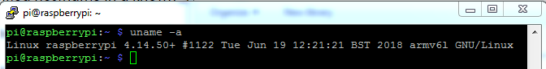
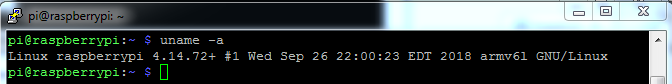
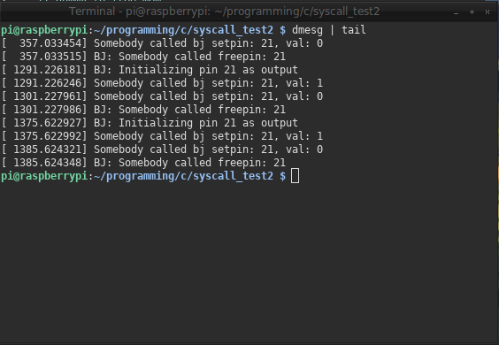

To research how the Raspberry PI's GPIO pins are handled within the kernel and develop a kernel based system to be used by the programmer in user space
10/05/18
Got the custom kernel installed on the raspberry pi:
 Got LED's/GPIO verified working and managed through sysfs (see log for 10/05)

10/08/18
Have basic system calls implemented for managing GPIO pins. The calls are stored in the file bj_gpio.c in the directory arch/arm/kernel:
#include <linux/gpio.h>
/* Initialize a pin to either input or output
* inOrOut: 1: input, 0: output */
asmlinkage long sys_bj_initpin(const unsigned int pin, int inOrOut)
{
int ret;
char pinName[50]; // the label for the pin
printk("BJ: Initializing pin %d as %s\n",
pin, (inOrOut) ? "input" : "output");
/* Set the pinname */
sprintf(pinName, "gpio%d", pin);
/* Request the pin */
ret = gpio_request(pin, pinName);
if (ret < 0) {
printk("BJ: Bad GPIO request!\n");
return -EINVAL;
/* http://www-numi.fnal.gov/offline_software/srt_public_context/WebDocs$
*/
}
/* 1/not zero: input */
if (inOrOut) {
ret = gpio_direction_input(pin);
}
/* Otherwise output */
else {
/* 0 means default the pin to `off`, if its
* 1 then the pin will default to `on` */
ret = gpio_direction_output(pin, 0);
}
/* Test for failure setting direction */
if (ret < 0) {
printk("BJ: failed setting direction!\n");
gpio_free(pin);
return -EINVAL;
}
return 0;
}
asmlinkage long sys_bj_setpin(const unsigned int pin, const unsigned int val)
{
printk("Somebody called bj setpin: %d, val: %d\n", pin, val);
/* Set the value of the pin */
gpio_set_value(pin, val);
return 0;
}
asmlinkage long sys_bj_freepin(const unsigned int pin)
{
printk("BJ: Somebody called freepin: %d\n", pin);
// dummy to free mem
gpio_free(pin);
return 0;
}
In order to get the file to compile, had to add `bj_gpio.o` to obj-y in the Makefile in /arch/arm/kernel:
obj-y := elf.o entry-common.o irq.o opcodes.o \
process.o ptrace.o reboot.o return_address.o \
setup.o signal.o sigreturn_codes.o \
stacktrace.o sys_arm.o time.o traps.o \
bj_gpio.o
This is the program used to test the calls on the raspberry pi:
#define _GNU_SOURCE
#include <unistd.h>
#include <sys/syscall.h>
#include <stdio.h>
// syscall numbers
#define SYS_bj_initpin 398
#define SYS_BJ_setpin 399
#define SYS_bj_freepin 400
int main(void)
{
const unsigned int pin = 21;
/* 0 for output */
syscall(SYS_bj_initpin, pin, 0);
/* Turn the pin on */
syscall(SYS_bj_setpin, pin, 1);
/* Sleep for 10 seconds */
sleep(10);
/* Turn the pin off */
syscall(SYS_bj_setpin, pin, 0);
/* Free the pin */
syscall(SYS_bj_freepin, pin);
return 0;
}
You can see the `printk`s from `dmesg | tail`:
